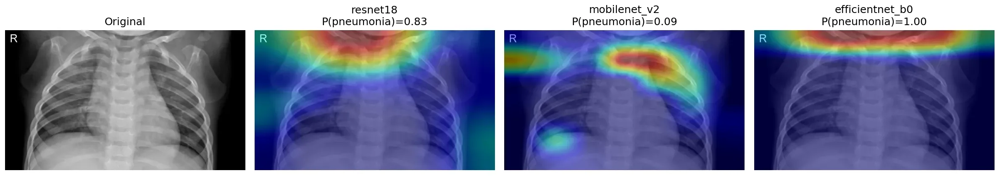

Three ImageNet-pretrained CNNs were fine-tuned to detect pneumonia in pediatric chest X-rays (Kermany et al., 5,856 images). ResNet18 scored highest, but only 44% of its Grad-CAM attention fell on the lungs, barely above the 39% expected by chance. MobileNetV2 was 2.2 points less accurate and put 71% there. On 656 adult X-rays from another hospital, every model lost about 0.2 AUC and ResNet18's lead disappeared.

| Model | Accuracy | F1 | AUC (95% CI) | Sens. | Spec. | Spec. at 95% sens.* |
|---|---|---|---|---|---|---|
| ResNet18 (served) | 87.8% | 0.911 | 0.978 (0.967–0.987) | 0.997 | 0.679 | 0.882 |
| MobileNetV2 (served) | 85.6% | 0.896 | 0.968 (0.953–0.980) | 0.995 | 0.624 | 0.863 |
| EfficientNet-B0 | 84.8% | 0.891 | 0.951 (0.933–0.968) | 0.997 | 0.598 | 0.790 |
Kermany test split, n = 624 (234 normal, 390 pneumonia), threshold 0.5 unless noted. *Threshold chosen for 95% sensitivity by stratified 2-fold cross-validation (50 splits). For ResNet18 this is t = 0.946, used by the live demo.
Lungs, clavicles and scapulae were segmented with torchxrayvision's ChestX-Det PSPNet. For each image we measured the share of Grad-CAM energy (last conv block, predicted class) inside the lung mask. Normal X-rays are the clean comparison, because the adult-trained segmenter drops some consolidated lung on pediatric pneumonia X-rays.
| Normal X-rays | Pediatric: on lungs (95% CI) | Peak in lung | Adult NIH: on lungs (95% CI) |
|---|---|---|---|
| chance (lung share of image) | 38.5% | 33.4% | |
| ResNet18 | 43.9% (42.8–45.0) | 21% | 38.7% (36.8–40.6) |
| MobileNetV2 | 71.2% (70.1–72.3) | 60% | 58.2% (56.3–60.0) |
| EfficientNet-B0 | 40.7% (38.1–43.4) | 33% | 16.4% (14.1–19.0) |
MobileNetV2 − ResNet18: +27.3 points on pediatric (CI +26.0 to +28.6) and +19.6 on adult X-rays. A correction to this project's first, visual claim: ResNet18's attention on the clavicles and scapulae (4.7%) is below their 6.4% share of the image. Its attention isn't on the shoulders. It's spread over the neck, mediastinum and borders, and mostly not on the lungs.
656 X-rays from NIH ChestX-ray14 (batch 7) with radiologist-adjudicated labels (Majkowska et al., 2020): 364 airspace opacity, 292 with all expert labels negative, mostly AP views.
| Model | Pediatric AUC | NIH AUC (95% CI) | Drop (95% CI) |
|---|---|---|---|
| ResNet18 | 0.978 | 0.772 (0.735–0.808) | −0.206 (−0.246 to −0.170) |
| MobileNetV2 | 0.968 | 0.786 (0.753–0.819) | −0.181 (−0.217 to −0.146) |
| EfficientNet-B0 | 0.951 | 0.733 (0.695–0.771) | −0.218 (−0.259 to −0.178) |
Data: Kermany et al., Cell 2018 · Wang et al., CVPR 2017 (ChestX-ray14) · Majkowska et al., Radiology 2020 · Cohen et al., MIDL 2022 (TorchXRayVision).